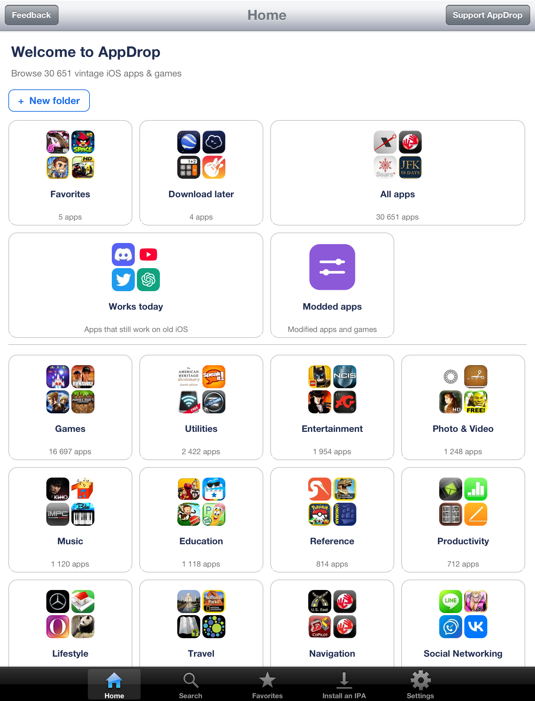
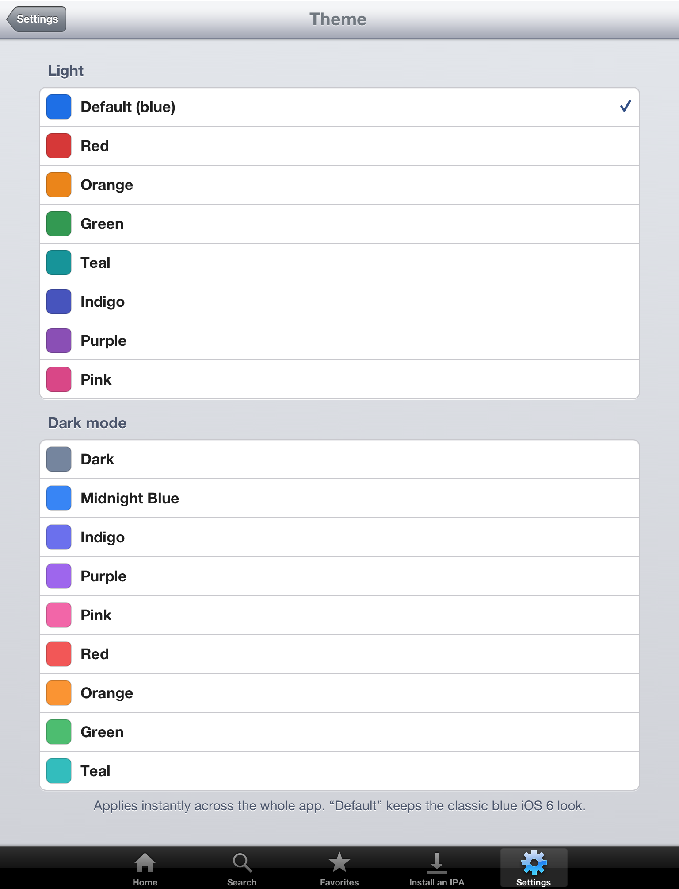
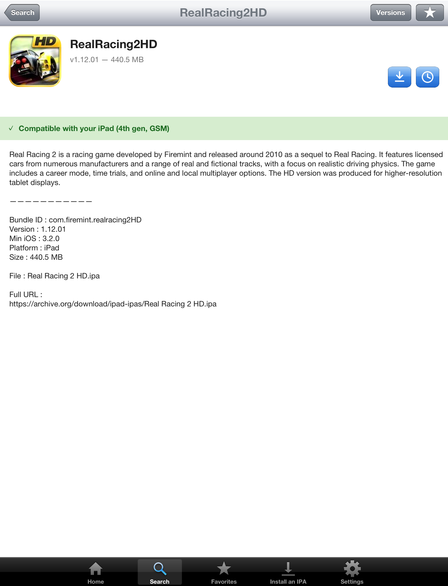
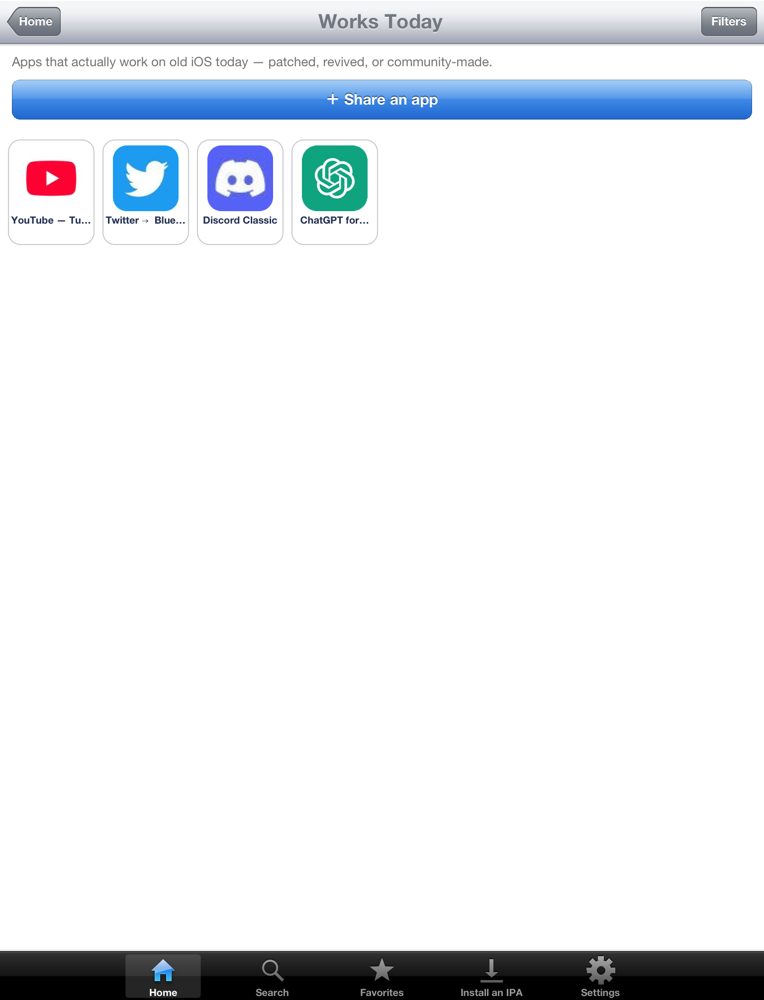
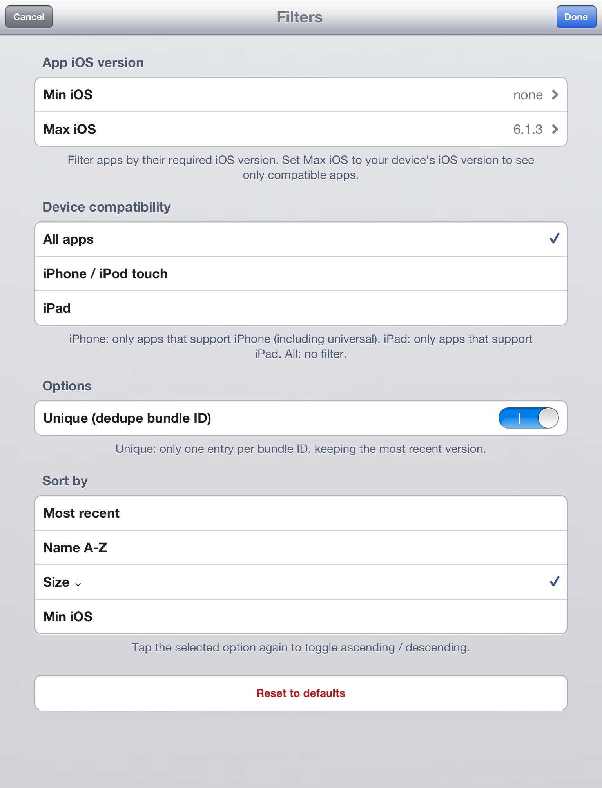
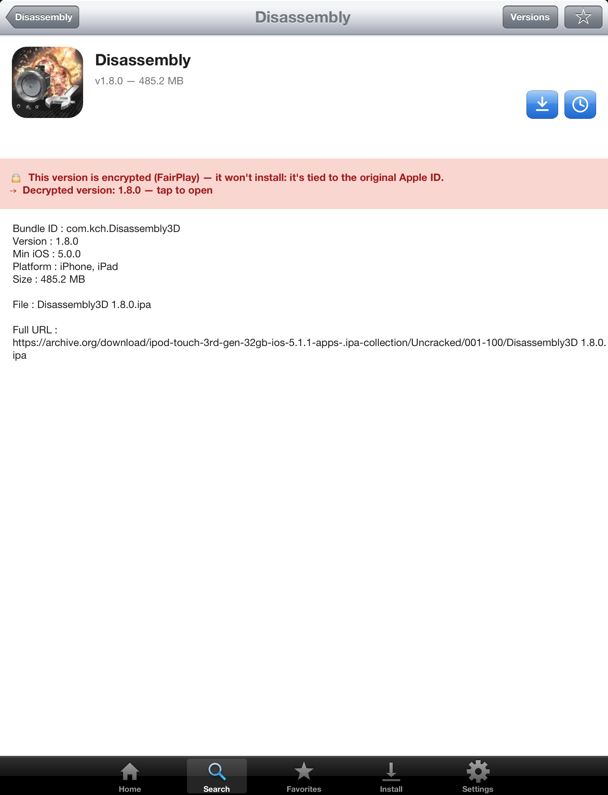
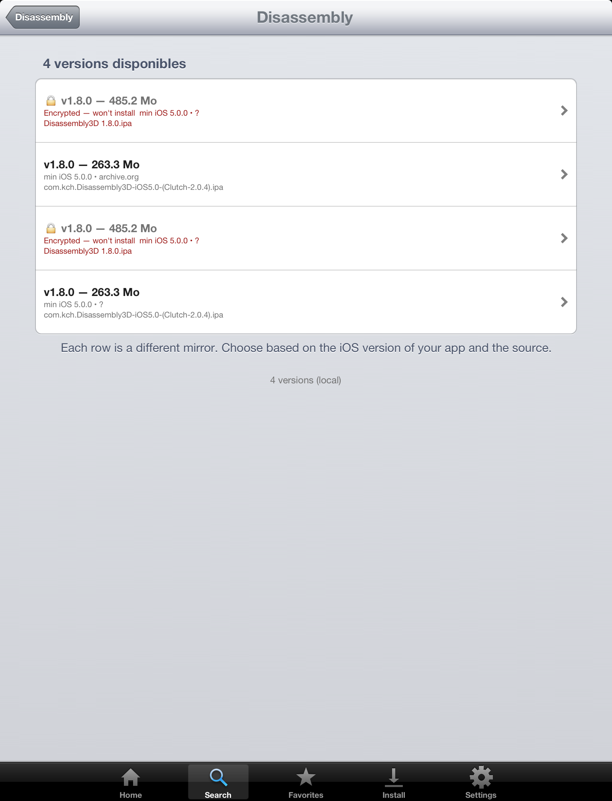

AppDrop
Browse 43,000+ vintage iOS apps (2008–2014) — every archived version included — and install them on your jailbroken device.
iOS 5 – 10 · armv7
What's new v3.0
- 17 themes + full dark mode — recolour the whole app instantly (8 light, 9 dark), no restart
- Your own layout — list or icon-grid on iPhone and iPad, set with a native iOS-6 wheel; drag & resize the home tiles widget-style
- Favorites, folders & "download later" — star apps, sort them into named collections, queue downloads for later
- Modded apps — a brand-new section for patched / unlocked builds, growing over time
- Share an app — contribute an app you have the right to share, through a moderated upload
- FairPlay-aware — detects DRM-encrypted builds before downloading and steers you to a clean version
- Pause & resume downloads, screen-stays-awake while installing, and HTTP-proxy support
- Dozens of fixes + fuller 8-language localization. The previous AI search was removed (its free, no-key LLM became unreliable)
- Tested on iPad 1 (iOS 5.1.1), iPhone 5 (iOS 6.1.4), iPad 4 (iOS 6.1.3)
What it does
AppDrop opens onto the IPA Archive catalog (43,000+ vintage iOS apps, with every version archived), browsable by category. The catalog is downloaded on first launch and keeps itself up to date. Search by title, browse categories, pick from the "Works today" revival list or the new Modded apps section, and save favourites into your own folders. Tap install — the app delegates to IPA Installer Console (already required by this package) and your jailbreak does the rest.
Highlights
- 43,000+ vintage apps — browse by category; downloaded once then self-updating (≈157k IPA files counting every version)
- 17 themes + full dark mode — retint the whole app live, no restart
- List or grid, your way — on iPhone and iPad via a native iOS-6 wheel; widget-style reorder/resize on the home
- Favorites, folders & download-later — organise apps your way
- "Works today" + Modded apps — apps that still run today, plus a new section for patched builds
- Share an app — moderated upload of apps you have the right to share
- Device-aware + FairPlay-aware — a compatibility verdict per app, and DRM-encrypted builds caught before download
- 8 languages — EN · FR · ES · DE · PT‑BR · JA · ZH‑Hans · TR, auto-detected, with localized app descriptions
- Pause/resume installs — multi-select batch installs, a downloads counter, DNS-over-HTTPS + HTTP-proxy
- Skeuomorphic iOS 6 look · no backend, no account, no tracking — talks directly to archive.org
Screenshots

Home — browse 43,000+ vintage apps by category, your way

17 themes + full dark mode, applied live across the app

App detail — compatibility verdict, every archived version, install

"Works today" — apps that still run on old iOS

Filters — narrow by iOS version, device class, sort

FairPlay-aware — encrypted builds are caught before download, with a clean version suggested

Every mirror in Versions shows whether it's encrypted (won't install)
Requirements
- A jailbroken device on iOS 5 → iOS 10 (armv7 / 32-bit)
- AppSync Unified — needed to install unsigned IPAs (auto-installed as a dependency)
- IPA Installer Console by autopear (or
appinst) — the actual install tool (auto-installed as a dependency)
- A working internet connection for downloads
Enjoying AppDrop? Free + ad-free forever.
If it saved you the trouble of manual sideloading, a small tip helps me keep maintaining the catalog 💙
💖 Tip on PayPal
Source: github.com/AdrienRL1/AppDrop ·
Source URL: https://adrienrl1.github.io/cydia/